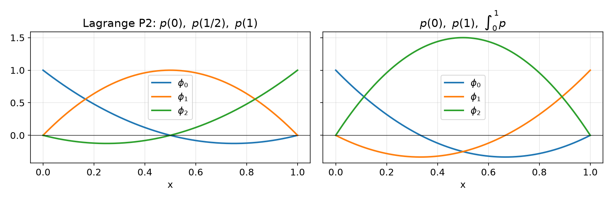
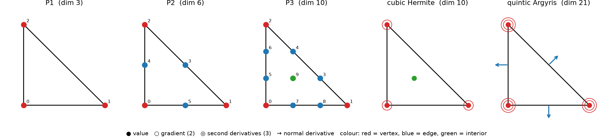
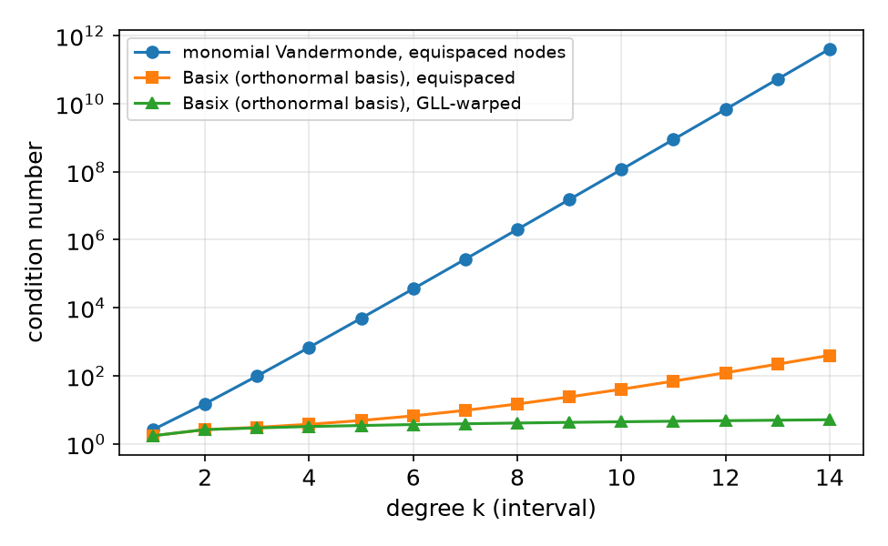
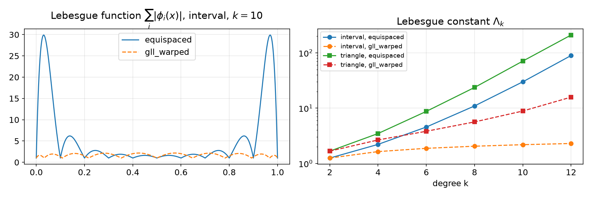
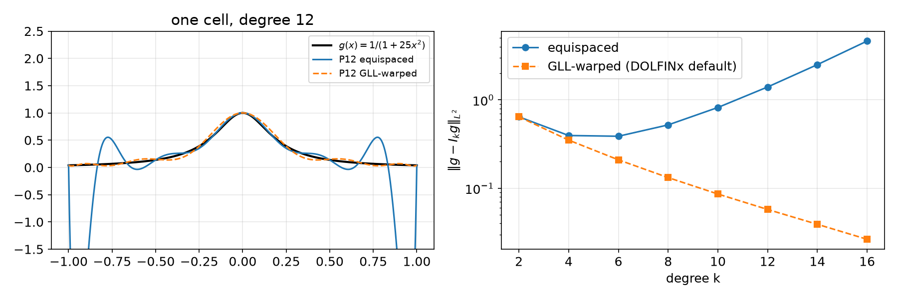

AI-based Materials and Process Simulation I
Week 02 — Ciarlet’s Finite Element · Vandermonde Matrices and Unisolvence · Basix Elements · Lagrange Variants
Process Systems Laboratory
Department of Chemical and Biomolecular Engineering, SeoulTech
Today
| Part | Topic | Time |
|---|---|---|
| Quiz | Week 1 material (closed-AI) | 10 min |
| A | Theory — Ciarlet’s element, nodal basis, Vandermonde matrix, unisolvence, Hermite and Argyris | 70 min |
| B | Basix — creating, inspecting and tabulating elements | 40 min |
| C | Lagrange variants — Lebesgue constants, the Runge function in DOLFINx | 35 min |
| D | LLM pitfalls with elements · assignment | 15 min |
Lab notebook: W02_lab.ipynb · Assignment: W02_HW2.ipynb (due before Week 3)
Week 1 in one slide
| Weak form | \int_\Omega \nabla u_h\cdot\nabla v\,dx = \int_\Omega f v\,dx \quad \forall v\in \mathring V_h |
| Linear system | K_{ij} = \int_\Omega \nabla\phi_j\cdot\nabla\phi_i\,dx, assembled cell by cell |
| On each cell | K^{(K)}_{ij} \approx \sum_q w_q\,\nabla\phi_j(X_q)\cdot\nabla\phi_i(X_q)\,|\det J_K| |
Quadrature gave us X_q, w_q. This week: where do the \phi_i come from?
- What exactly is a finite element? (Ciarlet)
- How is the basis computed, and when does it exist? (Vandermonde, unisolvence)
- How does Basix store and evaluate it? (
create_element,tabulate) - Where should the nodes be? (Lagrange variants)
Part A — Ciarlet’s Finite Element
§A1 The definition
Definition (Ciarlet, 1978) — Finite element
A finite element is a triple (K, \mathcal{P}, \mathcal{N}):
- K\subset\mathbb{R}^d — a bounded closed cell (interval, triangle, tetrahedron, …)
- \mathcal{P} — a finite-dimensional space of shape functions on K (usually polynomials)
- \mathcal{N}=\{N_0,\dots,N_{n-1}\} — a basis of the dual space \mathcal{P}': the nodal variables (DOFs)
Each N_i:\mathcal{P}\to\mathbb{R} is a linear functional. Examples:
| Nodal variable | Formula | Used by |
|---|---|---|
| point evaluation | N(p)=p(x_i) | Lagrange |
| derivative evaluation | N(p)=\partial p/\partial x_j\,(x_i) | Hermite, Argyris |
| normal derivative | N(p)=\nabla p(x_i)\cdot n | Argyris |
| integral moment | N(p)=\int_K p\,q\,dx | integral DOFs, bubbles |
| normal component | N(\mathbf p)=\mathbf p(x_i)\cdot n | Raviart–Thomas (Course II) |
§A2 The nodal basis
Definition — Nodal basis
The nodal basis \{\phi_0,\dots,\phi_{n-1}\} of \mathcal{P} is dual to \mathcal{N}: N_i(\phi_j)=\delta_{ij}.
Consequence: every p\in\mathcal{P} is reconstructed from its DOF values, p=\sum_j N_j(p)\,\phi_j . This is why the coefficient vector \mathbf u in K\mathbf u=\mathbf f holds DOF values.
1D Lagrange, degree k: K=[a,b], \mathcal{P}=\mathcal{P}_k, N_i(p)=p(x_i), x_i=a+(b-a)\,i/k: \phi_i(x)=\prod_{j\ne i}\frac{x-x_j}{x_i-x_j}. For other nodal variables there is no such formula. We need a general recipe.
§A3 The Vandermonde matrix
Pick any basis \{\psi_0,\dots,\psi_{n-1}\} of \mathcal{P} (for example monomials).
Definition — Vandermonde matrix
V_{ij}=N_j(\psi_i)
Lemma — Basis transformation
Write \phi_i=\sum_j \mu_{ij}\psi_j. Then \mu=V^{-1}.
Proof. \delta_{ij}=N_j(\phi_i)=\sum_l\mu_{il}N_j(\psi_l)=\sum_l\mu_{il}V_{lj}=(\mu V)_{ij}. \square
Recipe: choose \psi → build V → solve for \mu → \phi_i=\sum_j\mu_{ij}\psi_j. It works for any kind of nodal variable, as long as V is invertible.
§A4 Worked example — two elements on [0,1], same \mathcal{P}_2
\psi=\{1,x,x^2\}
Lagrange: N=\{p(0),\,p(\tfrac12),\,p(1)\} V=\begin{bmatrix}1&1&1\\0&\tfrac12&1\\0&\tfrac14&1\end{bmatrix},\quad \begin{aligned}\phi_0&=1-3x+2x^2\\ \phi_1&=4x-4x^2\\ \phi_2&=-x+2x^2\end{aligned}
Integral DOF: N=\{p(0),\,p(1),\,\int_0^1p\} V=\begin{bmatrix}1&1&1\\0&1&\tfrac12\\0&1&\tfrac13\end{bmatrix},\quad \begin{aligned}\phi_0&=1-4x+3x^2\\ \phi_1&=-2x+3x^2\\ \phi_2&=6x-6x^2\end{aligned}

Same space \mathcal{P}_2, different elements: the basis depends on \mathcal N. Check: \int_0^1\phi_2=1, \int_0^1\phi_0=\int_0^1\phi_1=0.
§A5 Unisolvence
When is (K,\mathcal{P},\mathcal{N}) a valid element? \mathcal N must be a basis of \mathcal P'.
Lemma — Equivalent conditions (with \dim\mathcal P=|\mathcal N|=n)
- \mathcal N is a basis of \mathcal P'
- the Vandermonde matrix V is invertible
- if v\in\mathcal P and N_i(v)=0 for all i, then v\equiv 0
Definition — Unisolvence
If (3) holds, \mathcal N determines \mathcal P; the element is unisolvent.
- (2)⇔(3): V^T\mathbf c=0 means N_j(\sum_i c_i\psi_i)=0 for all j. A nonzero \mathbf c gives a nonzero v with all DOFs zero.
- Always check the count |\mathcal N|=\dim\mathcal P first. Then condition (3) is usually the easiest to prove.
- Counterexample: P1 on a “triangle” whose three vertices are collinear. The linear function vanishing on that line has all DOFs zero, so the element is not unisolvent.
§A6 Proving unisolvence — 1D, and a tool for 2D
1D Lagrange, degree k. v\in\mathcal P_k vanishes at k+1 distinct points ⇒ v\equiv0. \square
In 2D a polynomial can vanish at infinitely many points without being zero. We need:
Lemma — Vanishing on a hyperplane
Let p\in\mathcal P_k(\mathbb R^d), k\ge1, vanish on the hyperplane \Pi_L=\{x: L(x)=0\} of a non-degenerate affine L. Then p=L\,q with q\in\mathcal P_{k-1}.
Strategy on a triangle with edge lines L_1,L_2,L_3=0:
- p restricted to an edge is a 1D polynomial of degree k. If it vanishes at k+1 edge nodes, it vanishes on the whole edge line.
- Factor out L_1, then L_2, then L_3.
- What remains must vanish at the interior nodes. Use induction.
§A7 Lagrange elements on triangles

Definition — Pk Lagrange element
K: triangle z_1,z_2,z_3; \mathcal P=\mathcal P_k, \dim=\binom{k+2}{2}; N_{ij}(v)=v(x_{ij}), x_{ij}=z_1+(z_2-z_1)\tfrac ik+(z_3-z_1)\tfrac jk, 0\le j\le i\le k
Numbers in the figure = Basix local DOF order: vertices, then edges, then interior. Edge i is opposite vertex i.
| vertex | edge | interior | total | |
|---|---|---|---|---|
| P1 | 3 | 0 | 0 | 3 |
| P2 | 3 | 3 | 0 | 6 |
| P3 | 3 | 6 | 1 | 10 |
| Pk | 3 | 3(k-1) | \binom{k-1}{2} | \binom{k+2}{2} |
§A8 Unisolvence of P1 and P2
P1. Let p\in\mathcal P_1 vanish at z_1,z_2,z_3.
- On the line \Pi_1 through z_2,z_3, p is linear and vanishes twice, so p=0 on \Pi_1. Hence p=c\,L_1.
- 0=p(z_1)=c\,L_1(z_1), and L_1(z_1)\ne0, so c=0. \square
P2. Let p\in\mathcal P_2 vanish at the 3 vertices and 3 edge midpoints.
- On edge 1, p is quadratic with 3 zeros, so p=L_1Q_1 with Q_1\in\mathcal P_1.
- On edge 2, L_1\ne0 except at one vertex. So Q_1 vanishes at 2 points of \Pi_2, Q_1=0 on \Pi_2, and p=c\,L_1L_2.
- At the midpoint of edge 3, L_1L_2\ne0, so c=0. \square
Pk, k\ge4 — induction in steps of 3. Factor out L_1L_2L_3; the rest is Q_3\in\mathcal P_{k-3}. Q_3 vanishes on the interior nodes, which form a P(k-3) lattice. Base cases k=1,2,3. You will do P3 in HW2.
§A9 Beyond point values — Hermite and Argyris
Cubic Hermite (triangle)
\mathcal P_3, \dim=10:
- value at the 3 vertices (3)
- gradient at the 3 vertices (6)
- value at the centroid (1)
Quintic Argyris (triangle)
\mathcal P_5, \dim=21:
- value at the 3 vertices (3)
- gradient at the 3 vertices (6)
- all second derivatives at the 3 vertices (9)
- normal derivative at the 3 edge midpoints (3)
- Both are unisolvent. The proof uses the same tool, with derivative conditions forcing double zeros on edges.
- Why would anyone want derivative DOFs? Fourth-order problems (plates, Cahn–Hilliard in primal form) need C^1 continuity across cells.
- Which of the two actually gives a C^1 space? It comes down to counting conditions along one edge. You will check it numerically in HW2 Q4.
Part B — Elements in Basix
§B1 Creating and inspecting an element
import basix
P, T, LV = basix.ElementFamily.P, basix.CellType.triangle, basix.LagrangeVariant
e = basix.create_element(P, T, 2, LV.equispaced)
e.dim # 6
e.points # [[0,0],[1,0],[0,1],[0.5,0.5],[0,0.5],[0.5,0]] ← nodes, Basix order
e.entity_dofs # [[[0],[1],[2]], [[3],[4],[5]], [[]]] ← by vertex / edge / cell| Fact (Basix 0.11) | Consequence |
|---|---|
| Degree ≥ 3 Lagrange needs a variant | create_element(P, T, 3) → RuntimeError: ... need to be given a variant |
| Degree ≤ 2 without a variant | silently uses gll_warped, which equals equispaced for k\le2 |
DOLFINx ("Lagrange", k) |
uses gll_warped for every k |
| Vertices come first | P2 on the interval: points = [0, 1, 0.5], not [0, 0.5, 1] |
From a DOLFINx space: V.element.basix_element, or V.ufl_element() for the UFL wrapper.
§B2 Tabulation
T_{qj}=\phi_j(X_q) and its derivatives, at any set of reference points:
| Axis | Size | Meaning |
|---|---|---|
| 0 | \binom{n_d+d}{d} | derivative: 1; \partial_x,\partial_y; \partial_{xx},\partial_{xy},\partial_{yy}; … |
| 1 | n_{pts} | point X_q |
| 2 | n_{dofs} | basis function \phi_j |
| 3 | value size | 1 for scalar elements |
Two free sanity checks for any Lagrange element: \sum_j\phi_j\equiv1 and \sum_j\nabla\phi_j\equiv0 (constants are in \mathcal P). For P3 at 4000 lattice points: \max|\sum_j\phi_j-1| = 1.0\times10^{-15}.
§B3 What Basix stores — and why not monomials
Basix stores \phi_i=\sum_j C_{ij}P_j, where \{P_j\} is an orthonormal polynomial basis on the reference cell (Legendre on intervals, Dubiner on triangles).
coefficient_matrix is not V^{-1} in the monomial basis. Several older tutorials say it is.

| k | monomial V | Basix, GLL |
|---|---|---|
| 4 | 6.9\times10^{2} | 3.2 |
| 8 | 2.0\times10^{6} | 4.1 |
| 12 | 6.8\times10^{9} | 4.8 |
§B4 Math → Basix
| Concept | Theory | Basix 0.11 |
|---|---|---|
| cell K | reference cell | basix.CellType.triangle |
| element (K,\mathcal P,\mathcal N) | Ciarlet triple | basix.create_element(family, cell, k, variant) |
| \dim\mathcal P | \binom{k+2}{2} | e.dim |
| nodes x_i (Lagrange) | N_i(p)=p(x_i) | e.points |
| geometric decomposition | DOFs per vertex/edge/cell | e.entity_dofs |
| \mu=V^{-1} | basis coefficients | e.coefficient_matrix (orthonormal basis!) |
| \phi_j(X_q), \nabla\phi_j(X_q) | tabulation | e.tabulate(n, pts) → (·, npts, ndofs, vs) |
| Hermite | value + gradient DOFs | basix.create_element(basix.ElementFamily.Hermite, T, 3) |
| in a DOLFINx space | basix.ufl.element(P, msh.basix_cell(), k, variant) |
Part C — Where Should the Nodes Be?
§C1 The Lebesgue constant
Interpolation I_k g=\sum_i g(x_i)\phi_i. For any p\in\mathcal P_k, I_kp=p, so \|g-I_kg\|_\infty\le\big(1+\Lambda_k\big)\inf_{p\in\mathcal P_k}\|g-p\|_\infty,\qquad \Lambda_k=\max_{x\in K}\sum_i|\phi_i(x)|.

| k | interval equi | interval GLL | triangle equi | triangle GLL |
|---|---|---|---|---|
| 4 | 2.2 | 1.6 | 3.5 | 2.7 |
| 8 | 10.9 | 2.0 | 23.6 | 5.6 |
| 12 | 89.3 | 2.3 | 210 | 15.8 |
(triangle: max over a 60-division lattice)
Equispaced nodes: \Lambda_k grows exponentially. GLL-warped nodes: \Lambda_k grows slowly (1.25 → 2.29 from k=2 to 12 on the interval).
§C2 Demo — the Runge function in DOLFINx

| k | equispaced | GLL-warped |
|---|---|---|
| 4 | 0.40 | 0.35 |
| 8 | 0.52 | 0.13 |
| 12 | 1.40 | 0.058 |
| 16 | 4.63 | 0.027 |
L^2 interpolation error
§C3 Does this matter for you?
- P1, P2: all variants coincide. Nothing changes.
- P3–P5 (typical high-order work): the differences are small but real. The default
gll_warpedis the safe choice. - p-methods, spectral elements, k\ge 6: the node choice matters a great deal, for interpolation and for the conditioning of the matrices.
- When reading old code: legacy FEniCS used equispaced nodes. The same “P3” can give slightly different numbers in DOLFINx 0.11.
You can see the variant in
V.ufl_element().lagrange_variant. Print it whenever results must be reproduced exactly.
Part D — LLMs and Finite Elements · Assignment
§D1 Where LLM-generated element code goes wrong
| Kind | Typical examples | Detection |
|---|---|---|
| Stale API | Lagrange elements of degree ≥ 3 created without a variant; ufl.FiniteElement / ufl.VectorElement (removed from UFL); "CG" family name (deprecated) |
the error message + API sheet |
| Shape confusion | dropping or misreading an axis of tabulate output; (npts, ndofs) vs (ndofs, npts) |
print shapes; \sum_j\phi_j=1 |
| Ordering assumptions | assuming nodes in lexicographic order ([0, 0.5, 1]); assuming edge i joins vertices i and i+1 |
compare with e.points / e.entity_dofs |
| Wrong meaning | treating coefficient_matrix as the monomial V^{-1}; trusting element metadata or a docstring without testing it |
evaluate the claim at points: compare with tabulate |
The universal check for element code: N_i(\phi_j)=\delta_{ij}, evaluated numerically with your own nodal variables.
Assignment — HW2, due before the Week 3 lecture
HW2 — Unisolvence and nodal bases (100)
- Q1 proofs: an integral-DOF element, P3 on a triangle, 1D cubic Hermite (25)
- Q2 your own Vandermonde code for Pk on a triangle, compared with Basix; basis plots; what happens at high degree (25)
- Q3 when unisolvence fails: six nodes on a circle (20)
- Q4 LLM-assisted: the cubic Hermite triangle and the question of C^1 continuity (30)
Submit the executed .ipynb (restart & run all) with the AI-usage log.
Reminder: an error in a %%fenicsx cell does not stop Run all. Read every output before you submit.
Summary
| Concept | Key idea | Basix / DOLFINx |
|---|---|---|
| Ciarlet element | (K,\mathcal P,\mathcal N), \mathcal N a basis of \mathcal P' | create_element(family, cell, k, variant) |
| Nodal basis | N_i(\phi_j)=\delta_{ij} | tabulate |
| Vandermonde | V_{ij}=N_j(\psi_i), \mu=V^{-1} | coefficient_matrix (orthonormal \psi) |
| Unisolvence | N_i(v)=0\ \forall i\Rightarrow v=0 | V invertible |
| Lagrange Pk | vertex, edge, interior nodes | points, entity_dofs |
| Variants | node placement controls \Lambda_k | LagrangeVariant.gll_warped (default) |
Next week — from local to global
Geometric decomposition, C^0/C^1 continuity, DG spaces; mesh topology and the DOF map in DOLFINx.